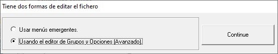

La aplicación ofrece dos formas de editar el contenido de un fichero de configuración cuando se crea. Ver siguiente imagen.

La opción de este menú "Usando el editor de Grupos y Opciones (Avanzado)" presenta el formulario que se describe en "Editor combinado de Grupos y Opciones"
Este mismo formulario puede ser invocado en cualquier momento mediante la opción "Editar el fichero cargado" del menú "Ficheros de Configuración".
Temas relacionados:
Objetivos de esta aplicación
Grupos : Creación, edición y eliminación
Opciones : Creación, edicion y eliminación
Creación de Opciones
Menu 'Añadir Opción'
Edición del Comentario
Edición de etiquetas
Editor combinado de Grupos y Opciones
Grupos: añadir, editar, borrar
Opciones: añadir, editar, borrar
Objetivos de esta aplicación
Grupos : Creación, edición y eliminación
Opciones : Creación, edicion y eliminación
Creación de Opciones
Menu 'Añadir Opción'
Edición del Comentario
Edición de etiquetas
Editor combinado de Grupos y Opciones
Grupos: añadir, editar, borrar
Opciones: añadir, editar, borrar